การสร้างสกิล
สำหรับระบบหลายบัญชี
เปิด --help ซ้ำ · ค้างรอ input · ล็อกอินหมดอายุ · ไม่รู้ว่าใช้โทเค็นไปเท่าไร

สิ่งที่เกิดขึ้นจริง
| เพนพอยต์ | สิ่งที่เกิดขึ้นจริง |
|---|---|
| เรียกผิดวิธี | codex exec ไม่ปิด stdin จะค้าง · ไม่ใส่ -p เปิดโหมดโต้ตอบ · exit code 0 ≠ สำเร็จ |
| สถานะล็อกอินไม่ตรงจริง | auth status ตอบ loggedIn แต่เรียกจริงได้ OAuth session expired |
| ประสานงานไม่เป็น | สั่งทีละบัญชี · ยัดข้อมูลยาวลง prompt · ไม่มีที่แชร์ความรู้ |
| ไม่มีสถิติ | ไม่รู้โทเค็น เวลา และโควตาของแต่ละบัญชี |
| ลองผิดลองถูกทุกครั้ง | เปิด --help ซ้ำ เขียนสคริปต์ช่วยใหม่ทุกครั้ง |
| หัวหน้าทีมโควตาหมด | แผนงานอยู่ในบริบทแชตของหัวหน้า งานค้างหายไปด้วย |
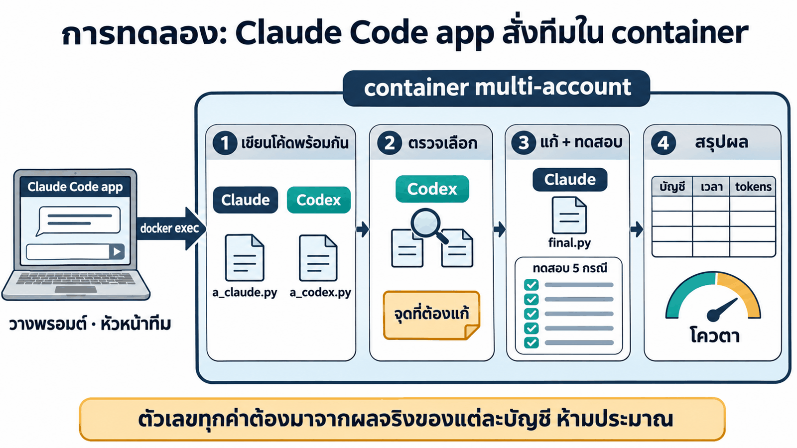
ใช้ทีมเอเจนต์ใน container multi-account ทำงานต่อไปนี้ ทำงานใน container ผ่าน docker exec เท่านั้น (บัญชี yolo1–5 และ cyolo1–5 ใช้เฉพาะบัญชีที่พร้อม) ก่อนเริ่ม ดูว่าใน container มีสกิลที่ช่วยงานนี้ได้หรือไม่ (/root/ai-accounts/.Claude/shared/skills) ถ้ามีให้อ่านและใช้ โฟลเดอร์งานใน container: /workspace/team-demo 1. ให้บัญชี Claude 1 บัญชี และบัญชี Codex 1 บัญชี เขียนฟังก์ชัน Python parse_duration(text) ที่แปลง "1h30m", "45s", "2h" เป็นจำนวนวินาที คนละแบบพร้อมกัน บันทึกเป็น a_claude.py และ a_codex.py 2. ส่งทั้งสองไฟล์ให้บัญชี Codex อีกบัญชีหนึ่งเลือกแบบที่ดีกว่าและบอกจุดที่ต้องแก้ 3. ส่งคำแนะนำนั้นให้บัญชี Claude แก้เป็น final.py แล้วรันทดสอบ 5 กรณี 4. สรุปตาราง บัญชี | งาน | เวลา (วินาที) | input tokens | output tokens | สำเร็จ/ล้ม ตัวเลขต้องมาจากผลจริงของแต่ละบัญชี ห้ามประมาณ 5. บอกโควตาที่เหลือของแต่ละบัญชีที่ใช้
บรรทัด "ก่อนเริ่ม ดูว่าใน container มีสกิล…" ทำให้เทียบได้ยุติธรรม และเป็นวิธีที่ Claude Code app รู้จักสกิลใน container
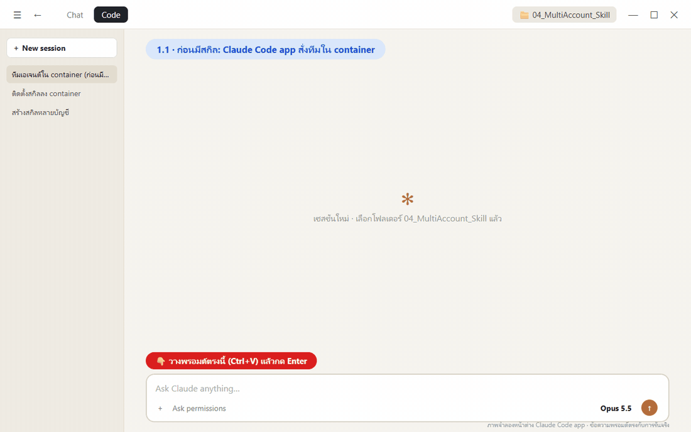
810.2 วินาที · 30 คำสั่ง (ล้ม 9)
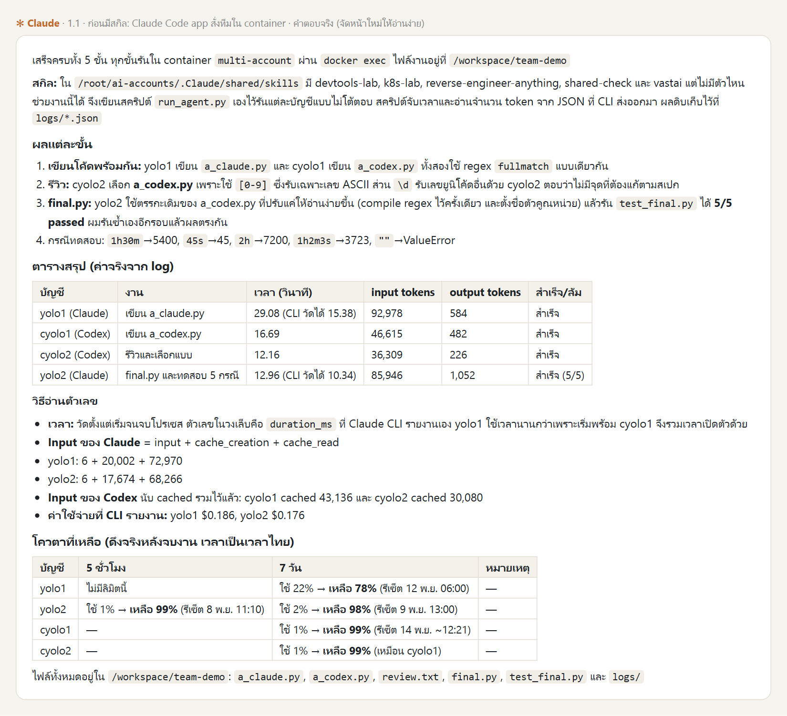
| สิ่งที่สังเกตได้ | รายละเอียด |
|---|---|
| สำรวจระบบเอง | ไล่เปิด container อื่น · Git Bash แปลง path จนล้ม |
| ยุ่งกับ credential | ตรวจ .credentials.json · เปิด auth.json |
| อ่านโค้ดเบื้องหลัง | อ่าน wrapper เพื่อเดาวิธีเรียก |
| เขียนเครื่องมือเอง | run_agent.py แล้ว docker cp เข้า container |

เรียกบัญชีให้ถูก flag ตรวจความพร้อม จับเวลา รวมสถิติ = สคริปต์ในสกิล
AI เห็นแค่ชื่อและคำอธิบายตลอดเวลา เปิด SKILL.md เมื่อจะใช้ และสคริปต์เมื่อถึงขั้นนั้น

แต่ละสกิลรู้เรื่องอะไร
| สกิล | รู้เรื่องอะไร |
|---|---|
yolo | Claude Code ทุกบัญชี · รุ่น/effort ตามความยาก · ตรวจความพร้อมด้วยการเรียกจริง · โควตา |
cyolo | Codex ทุกบัญชี · รุ่นจาก models_cache · สร้างภาพ · โควตาจาก rollout |
agent-team | ทำงานร่วมกันทั้งใน CLI เดียวกันและข้าม CLI · บริหารโทเค็น · สลับหัวหน้า · สถิติทั้งทีม |
skills/ ├── yolo/ SKILL.md · scripts/ · references/ ├── cyolo/ SKILL.md · scripts/ · references/ └── agent-team/ SKILL.md · scripts/team.py · references/
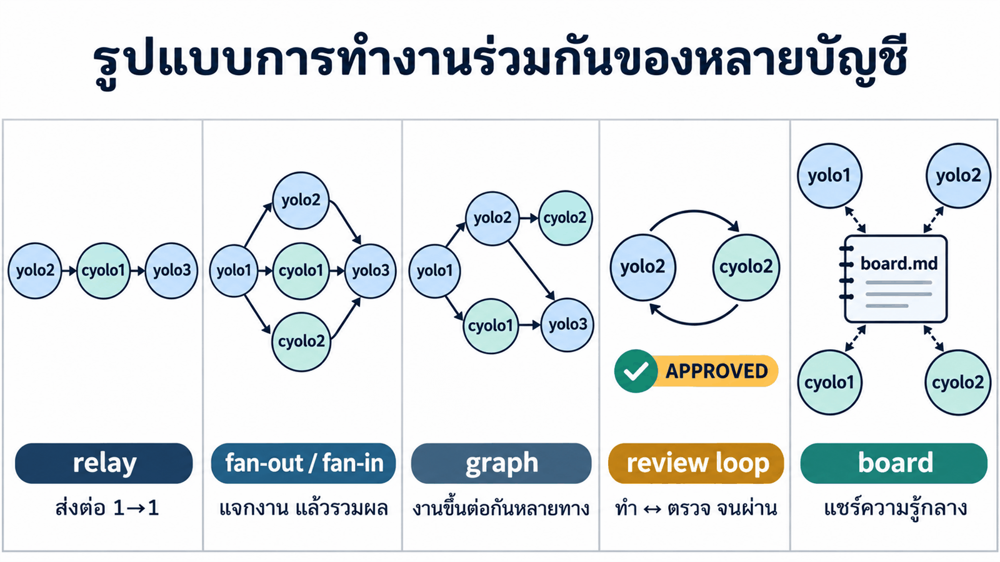

ใช้เมื่อไร และส่งข้อมูลอย่างไร
| รูปแบบ | ใช้เมื่อ | การส่งข้อมูล |
|---|---|---|
| relay | งานเป็นลำดับ | {{node}} ค่าสั้นแทรกลง prompt |
| fan-out / fan-in | งานย่อยไม่ขึ้นต่อกัน | งานรวมผลอ่าน {{file:node}} |
| graph | งานขึ้นต่อกันหลายทาง | depends_on ตัวจัดคิวรันงานที่พร้อมให้เอง |
| review loop | ต้องการคุณภาพ | วนจน APPROVED หรือครบ max_rounds |
| board | แชร์ข้อค้นพบให้ agent ที่มาทีหลัง | อ่าน board.md ก่อนเริ่ม · เพิ่มต่อท้าย |


- ทุกการเรียก = 1 บรรทัดใน
ledger.jsonl team.py statsสรุปตามบัญชี / รุ่น / งานteam.py quotaบอกเวลาของข้อมูลเสมอ- ไม่เก็บ prompt และ secret


| สถานการณ์ | ตัวจัดคิวทำอะไร |
|---|---|
| ก่อนสั่งงาน | แจกให้บัญชีที่เหลือมากก่อน งานง่ายใช้รุ่นเล็ก |
| ใกล้หมด ≥ 80% | หยุดรับงานใหม่ · งานในคิวย้าย |
| ล้มกลางคัน | ย้ายงาน + ความคืบหน้าใน msgs/ |
| ผู้ใช้ระบุบัญชีเอง | ไม่ย้ายเงียบ ๆ หยุดและรายงาน |
ก่อนออกเวรเขียนว่า ทำอะไรแล้ว · อะไรกำลังทำ · ต้องทำอะไรต่อ


หลักการออกแบบ
| หลักการ | รายละเอียด |
|---|---|
| สถานะอยู่ในไฟล์ | state.json · handoff.md |
| ผู้ควบคุมเป็นสคริปต์ | team.py lead ไม่ใช้โทเค็น · หัวหน้าทำงานเป็นรอบ เขียน checkpoint ทุกรอบ |
| ลูกทีมไม่ผูกกับหัวหน้า | process แยก · หัวหน้าเปลี่ยนตัว งานไม่หาย |
| สลับเชิงรุก | โควตา ≥ 80% หรือเกินงบ → ส่งไม้ตั้งแต่ยังเขียน checkpoint ทัน |
| สลับเชิงรับ | ล้ม · rate limit · เงียบไป → เริ่มคนใหม่จาก checkpoint |
| ผู้สืบทอด | พร้อม + โควตาเหลือมาก · ฝั่งเดียวกันก่อน (หัวหน้าเป็น Codex ได้) |


| ที่เก็บ | ลบ container | เครื่องใหม่ |
|---|---|---|
โฟลเดอร์สำรอง skills/ | ยังอยู่ | นำไปติดตั้งได้ |
shared/skills ใน volume | ยังอยู่ | ไม่ติดไป |
| container | หายไป | ไม่ติดไป |

| ขั้น | ทำที่ไหน | เวลารันจริง |
|---|---|---|
| 1 สร้างสกิลจากสเปก | Claude Code app | ~33 นาที |
| 2 ติดตั้งด้วยการคัดลอกโฟลเดอร์ | Claude Code app | 68 วินาที |
| 3 งานทีมชุดเดิมอีกครั้ง | Claude Code app | 181.9 วินาที |
| 4 สลับหัวหน้า + บริหารโทเค็น | Claude Code app | ~3 นาที |
| 5 ติดตั้งบนเครื่องใหม่ | Claude Code app | 3.84 วินาที |
04_MultiAccount_Skill/ ├── prompt_skill_spec.md ← สเปกของสกิล 3 ตัว (input ที่ 1) ├── reference/ ← สกิล yolo / cyolo ชุดเดิม ใช้เป็นแหล่งความรู้ (input ที่ 2) └── _solution/skills/ ← สกิลที่ได้จากการรันจริง = โฟลเดอร์สำรองพร้อมติดตั้ง
ต้องมี container multi-account และล็อกอินอย่างน้อย 1 บัญชี Claude + 1 บัญชี Codex
ให้ Claude สร้างสกิลจากสเปก
input: prompt_skill_spec.md + reference/ (สกิลเดิม) → ./skills (~33 นาที)
| หัวข้อในสเปก | สาระ |
|---|---|
| เป้าหมาย | 3 สกิล · SKILL.md + scripts/ + references/ · Python มาตรฐาน |
| ผู้ใช้ 2 ฝั่ง | ใน container และ Claude Code app บน host (docker exec) |
| ข้อเท็จจริงจากการทดลอง | flag ที่ถูก · ปิด stdin · exit code ไม่ใช่ตัวบอกผล · auth status ไม่ตรงจริง · ตำแหน่งโควตา |
| agent-team | run directory · พื้นฐาน 5 แบบ · ขั้นสูง 5 แบบ · บริหารโทเค็น · สลับหัวหน้า |
| ledger / การติดตั้ง / ทดสอบ | ฟิลด์ที่เก็บ · ติดตั้งด้วยการคัดลอกอย่างเดียว · เกณฑ์ PASS/FAIL/SKIP |
reference/ = สกิล yolo / cyolo ชุดเดิม (ไฟล์เดียวยาว ~44 KB ต่อสกิล) ใช้เป็นแหล่งความรู้
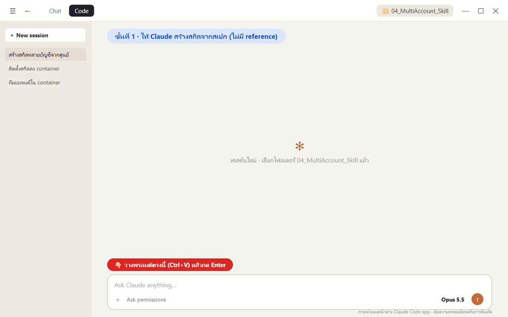
ช่วยสร้างสกิลชุดใหม่ที่ทำให้ AI ใช้ระบบหลายบัญชีใน container multi-account ได้เต็มประสิทธิภาพ ทำในโฟลเดอร์นี้ ใช้คำสั่ง docker ได้ แต่ห้ามลบ หยุด หรือสร้าง container / volume ใหม่ ห้ามแตะ credential และห้ามล็อกอินแทนผม วัตถุดิบ - ./prompt_skill_spec.md = สเปกของสกิล 3 ตัว (yolo, cyolo, agent-team) ทุกข้อต้องเป็นจริง - ./reference/ = สกิล yolo และ cyolo ชุดเดิม ใช้เป็นแหล่งความรู้ที่วัดมาแล้ว แต่ห้ามคัดลอกโครงสร้างไฟล์เดียวยาว ๆ - container multi-account ที่กำลังรัน = ที่ทดสอบจริง (บัญชีที่พร้อมอาจมีไม่ครบ ให้ตรวจเอง) สร้างไว้ใน ./skills (นอก container นี่คือต้นฉบับที่เก็บสำรอง) ทดสอบ: คัดลอกโฟลเดอร์สกิลใน ./skills ไปวางที่ shared ของทั้งสองฝั่งใน container แล้วทดสอบทุกข้อในหัวข้อ "ทดสอบ" ของสเปก ใช้บัญชีอย่างประหยัด (haiku/low กับงานทดสอบ) ข้อที่ต้องใช้บัญชีที่ไม่พร้อม = SKIP เขียน ./TEST-REPORT.md (นอกโฟลเดอร์ skills) แล้วสรุปเป็นตารางสั้น ๆ: ผลทดสอบ ไฟล์ที่สร้าง และเวลาที่ใช้ แล้วหยุด
หลักการออกแบบพรอมต์
ให้ข้อเท็จจริงที่ตรวจแล้ว
สเปกรวมกับดักจากการรันจริง Claude ไม่ต้องลองผิดลองถูกเอง
ห้ามคัดลอกโครงสร้างเดิม
สกิลใหม่ต้องแยกชั้นตามหลักการเปิดทีละชั้น
ต้นฉบับอยู่นอก container
./skills คือโฟลเดอร์สำรองที่นำไปติดตั้งเครื่องใหม่ได้
ทดสอบแบบประหยัด
งานทดสอบใช้รุ่นเล็ก และจำลองโควตาหมดแทนการใช้จริง
PASS 17 · SKIP 1
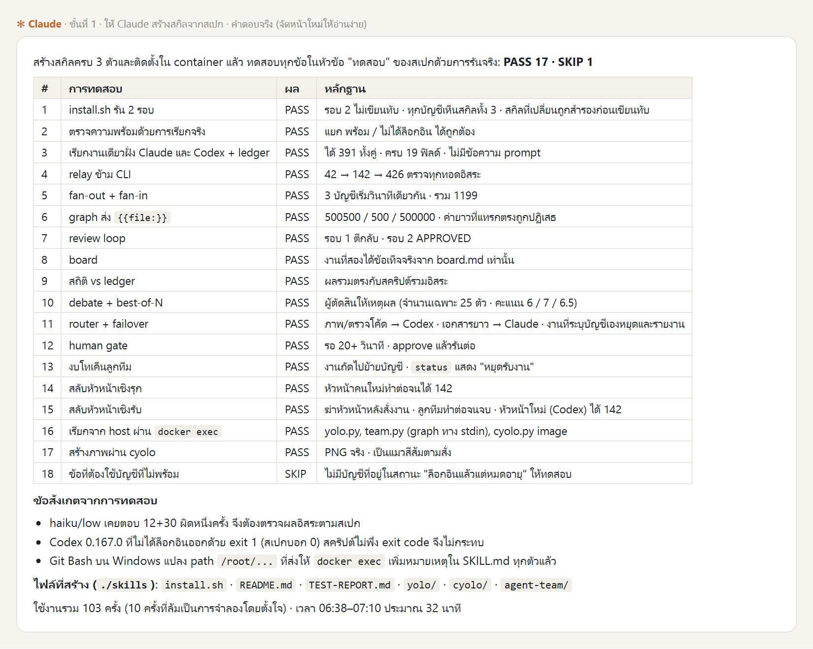
ติดตั้งสกิลด้วยการคัดลอกโฟลเดอร์
คัดลอก yolo · cyolo · agent-team ลง shared/skills · ไม่ต้องรันสคริปต์ติดตั้ง (68 วินาที)
ติดตั้งสกิลจาก ./skills ลง container multi-account ด้วยการคัดลอกโฟลเดอร์อย่างเดียว - คัดลอกโฟลเดอร์ yolo, cyolo และ agent-team ใน ./skills ไปวางที่ /root/ai-accounts/.Claude/shared/skills และ /root/ai-accounts/.Codex/shared/skills ใน container - เปิดแต่ละบัญชีหนึ่งครั้งด้วย yoloN --version และ cyoloN --version (wrapper จะเชื่อมสกิลให้แต่ละบัญชีเอง) - ตรวจว่าทุกบัญชี yolo1–5 และ cyolo1–5 มองเห็น SKILL.md ของทั้ง 3 สกิล และตรวจความพร้อมด้วยคำสั่ง check ของสกิล agent-team สรุปเป็นตาราง สกิล | ฝั่ง Claude | ฝั่ง Codex แล้วหยุด
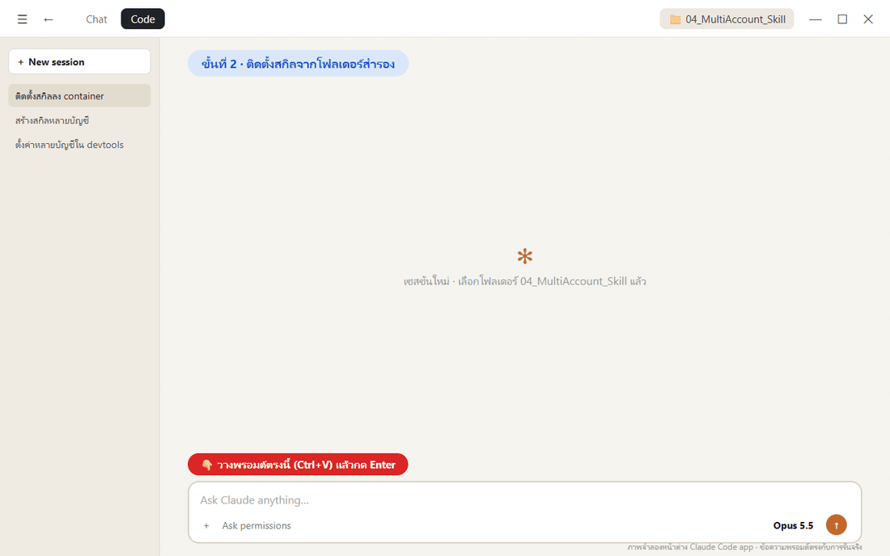
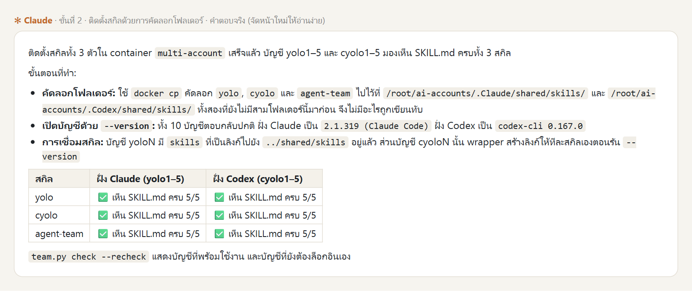
ใช้สกิลที่เตรียมไว้: เปลี่ยน ./skills เป็น ./_solution/skills


ทดสอบงานทีมชุดเดิมอีกครั้ง
วางพรอมต์ชุดเดียวกับหัวข้อ 1.1 ใน Claude Code app · ตอนนี้ใน container มีสกิลแล้ว (181.9 วินาที)
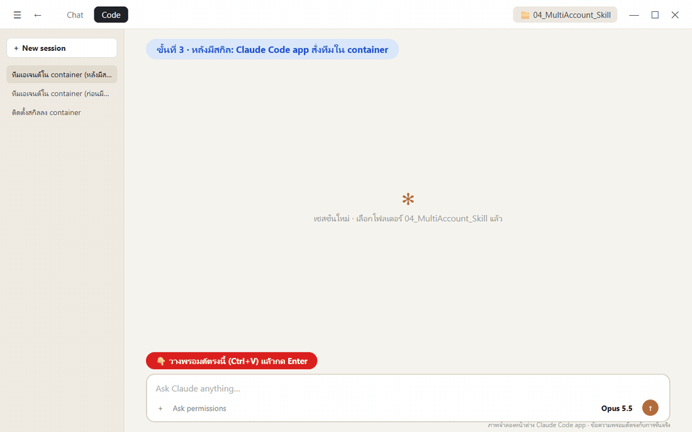
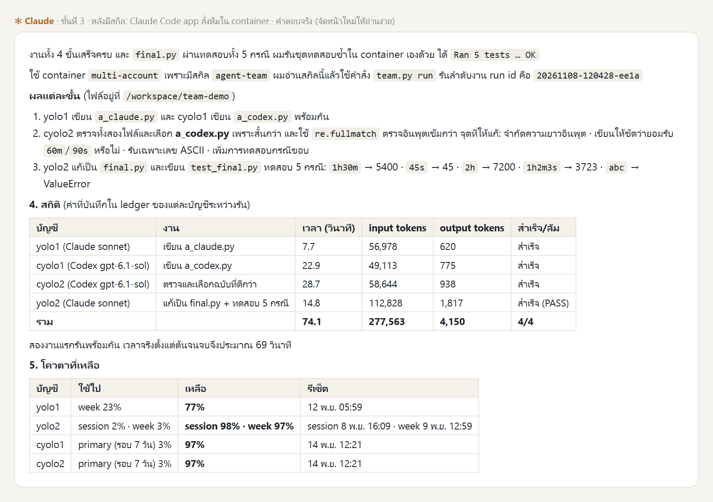
คำตอบจริงเป็นภาษาอังกฤษ แปลเป็นไทย
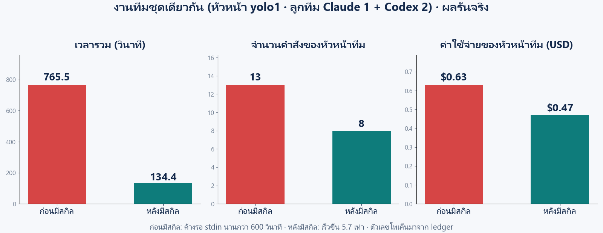
เร็วขึ้น 4.5 เท่า
| ก่อนมีสกิล | หลังมีสกิล | |
|---|---|---|
| เวลารวม | 810.2 วินาที | 181.9 วินาที |
| คำสั่งของ Claude Code app | 30 (ล้ม 9) | 16 (ล้ม 4) |
| ค่าใช้จ่าย | $0.94 | $0.66 |
| วิธีเรียกแต่ละบัญชี | เขียน run_agent.py เอง | team.py run ของสกิล |
| ไฟล์ credential | ตรวจ .credentials.json · เปิด auth.json | ไม่แตะ |
| โทเค็นและโควตา | สคริปต์ที่เขียนเอง | ledger + team.py quota |
สลับหัวหน้าทีมและบริหารโทเค็น
team.py lead + ตัวจำลอง: หัวหน้าล้ม · หัวหน้าเกินงบ · ลูกทีมเกินงบ (~3 นาที)
ใช้ทีมเอเจนต์ใน container multi-account ทดลองการสลับหัวหน้าทีมและการบริหารโทเค็นของลูกทีม งานของทีม: สร้างตารางสูตรคูณแม่ 2 ถึงแม่ 9 แบ่งให้ลูกทีมทำคนละแม่ แล้วรวมเป็นไฟล์เดียว /workspace/demo/table.md - ใช้คำสั่ง lead ของสกิล agent-team งานทุกชิ้นใช้ความยาก 1 - ตั้งงบโทเค็นของหัวหน้าให้ต่ำ เพื่อให้เกิดการสลับหัวหน้าแบบเชิงรุกอย่างน้อย 1 ครั้ง - จำลองให้หัวหน้าคนหนึ่งล้มกลางคัน เพื่อดูการสลับแบบเชิงรับ - ตั้งงบโทเค็นของลูกทีมคนหนึ่งให้ต่ำ เพื่อดูการย้ายงานไปลูกทีมคนอื่น สรุปเป็นตาราง: ประวัติการสลับหัวหน้า (จากใคร ไปใคร เพราะอะไร) การย้ายงานของลูกทีม ผลงานครบหรือไม่ และสถิติแยกตามบัญชี
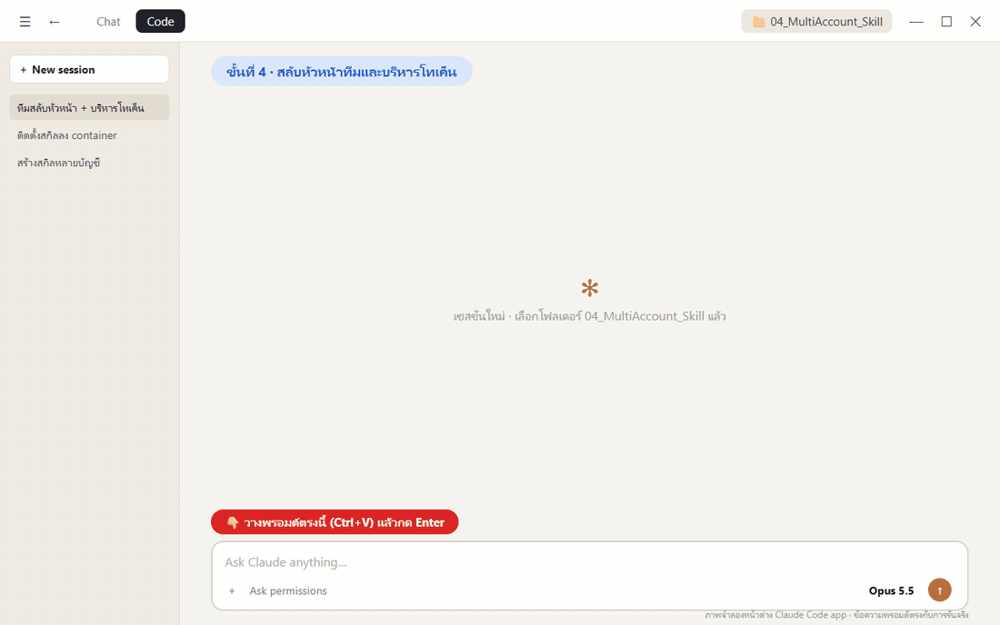
| เหตุการณ์ | เกิดอะไรขึ้น |
|---|---|
| สลับเชิงรับ | yolo1 ล้ม (จำลอง) → yolo2 · งาน 8 ชิ้นรันต่อจนเสร็จ ไม่ถูกเพิ่มซ้ำ |
| สลับเชิงรุก | yolo2 เกินงบหัวหน้า → cyolo1 (หัวหน้าฝั่ง Codex) จบงาน |
| ย้ายงานลูกทีม | cyolo2 เกินงบ → หยุดรับงาน · m5 ย้ายไป cyolo1 |
ตารางสูตรคูณครบ 8 แม่ 96 แถว ถูกทุกแถว · งบ 1 โทเค็นคือสวิตช์จำลอง
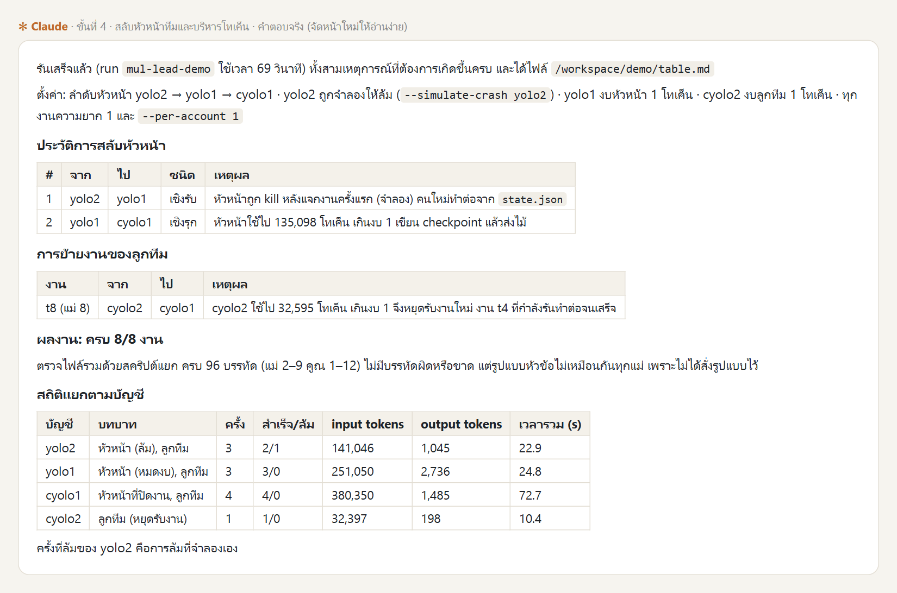
ติดตั้งบนเครื่องที่ยังไม่มี volume
volume ใหม่ไม่มีสกิล → คัดลอกโฟลเดอร์สำรอง → 3.84 วินาที
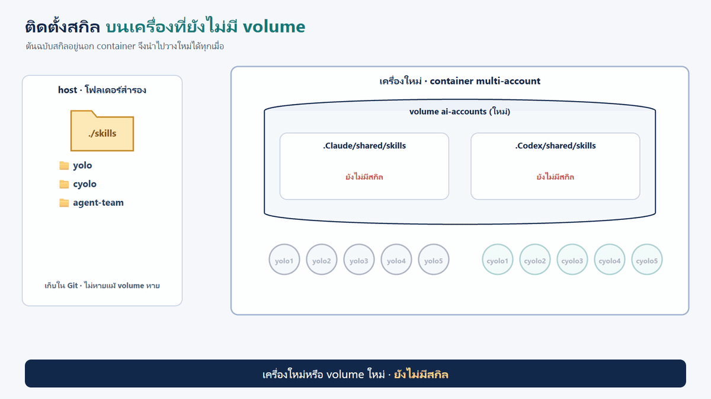
จำลองเครื่องใหม่ที่ยังไม่มี volume ai-accounts แล้วติดตั้งสกิลจากโฟลเดอร์สำรอง ./skills ด้วยการคัดลอกอย่างเดียว - สร้าง volume ai-accounts-new และ container multi-account-new จาก image multi-account:1.0 (พอร์ต 8890 · --privileged) - ตรวจว่าใน container ใหม่ยังไม่มีสกิล yolo, cyolo, agent-team - คัดลอกโฟลเดอร์ทั้ง 3 ไปที่ .Claude/shared/skills และ .Codex/shared/skills แล้วเปิดแต่ละบัญชีหนึ่งครั้ง (yoloN / cyoloN --version) จับเวลาตั้งแต่เริ่มคัดลอกจนตรวจเสร็จ - ตรวจว่าทุกบัญชี yolo1–5 และ cyolo1–5 มองเห็นสกิลครบ และ team.py check ทำงานได้ (บัญชีใหม่ยังไม่ได้ล็อกอินเป็นเรื่องปกติ) - เสร็จแล้วลบ container multi-account-new และ volume ai-accounts-new ทิ้ง ห้ามแตะ container multi-account และ volume ai-accounts สรุปเป็นตาราง ก่อนติดตั้ง | หลังติดตั้ง และเวลาที่ใช้ แล้วหยุด
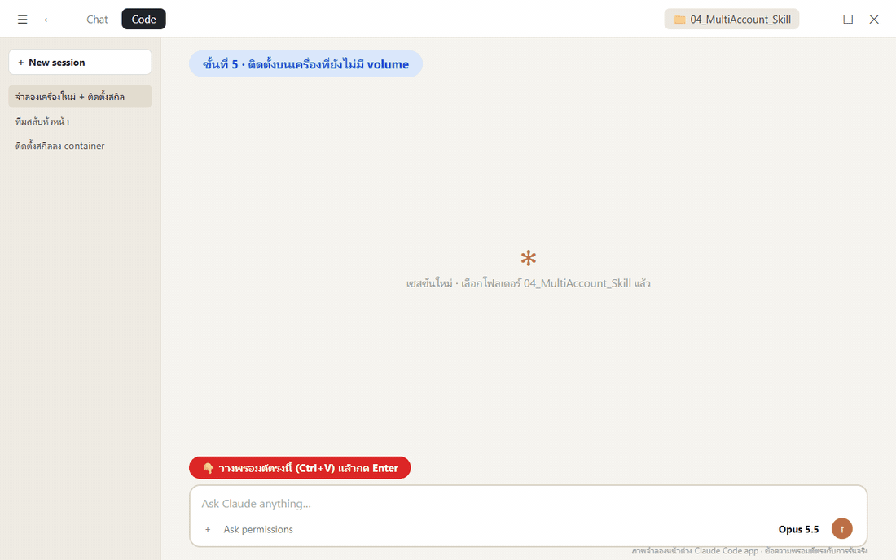
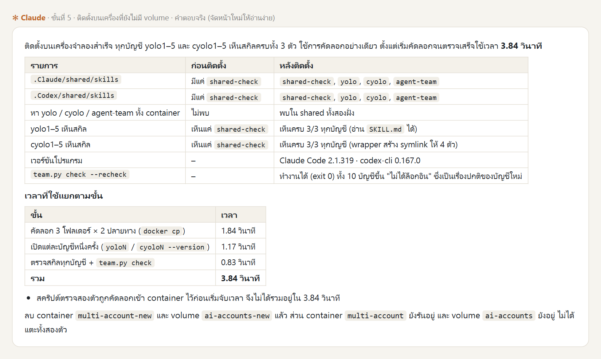
ไม่มีสกิล vs มีสกิล
| ไม่มีสกิล | มีสกิล | |
|---|---|---|
| วิธีเรียกแต่ละบัญชี | ลองผิดลองถูก เปิด --help | สคริปต์ใส่ flag ถูกและตรวจผลให้ |
| บัญชีไหนใช้ได้ | auth status (ไม่ตรงจริง) | check ด้วยการเรียกจริง |
| การทำงานร่วมกัน | สั่งทีละตัว ยัดข้อมูลลง prompt | relay · fan-out · graph · review · board · ขั้นสูง |
| สถิติ | ต้องเดา | ledger + โควตาพร้อมเวลาของข้อมูล |
| โควตาหมด | งานค้างหรือหาย | สลับหัวหน้าและย้ายงาน งานไม่หาย |
| เครื่องใหม่ | สร้างใหม่ | คัดลอกโฟลเดอร์สำรอง 3.84 วินาที |
| งานทีมชุดเดียวกัน | 810.2 วินาที | 181.9 วินาที |
ข้อควรรู้
ล็อกอินเองเสมอ
สกิลไม่ล็อกอินแทน และไม่อ่าน .credentials.json / .claude.json / auth.json
ข้าม permission
ใช้กับงานที่อนุญาตเท่านั้น ตรวจผลของ agent อื่นซ้ำเสมอ
ไม่ retry อัตโนมัติ
งานที่ล้มหลังใช้โทเค็นแล้วหยุดและรายงาน
Git Bash แปลง path
docker exec จาก Git Bash ใช้ //root/... หรือ PowerShell
แก้ที่ต้นฉบับ
แก้ใน skills/ แล้วคัดลอกทับใน shared/skills อีกครั้ง
macore.py 2 สำเนา
ใน yolo และ cyolo แก้แล้วต้องคัดลอกให้ตรงกัน
ใน container
T=/root/ai-accounts/.Claude/shared/skills/agent-team/scripts/team.py python3 $T check # บัญชีไหนใช้ได้ (เรียกจริง) python3 $T quota # โควตาทุกบัญชี + เวลาของข้อมูล python3 $T run graph.json # รันกราฟงานจนจบ python3 $T status # ภาพรวมทีม python3 $T stats # สถิติตามบัญชี / รุ่น / run
ติดตั้งเอง (จากโฟลเดอร์บท)
for d in .Claude .Codex; do for s in yolo cyolo agent-team; do docker cp ./_solution/skills/$s multi-account:/root/ai-accounts/$d/shared/skills/; done; done docker exec multi-account bash -lc 'for n in 1 2 3 4 5; do yolo$n --version; cyolo$n --version; done'
จาก host
docker exec multi-account cat /root/ai-accounts/.Claude/shared/skills/agent-team/SKILL.md docker exec multi-account python3 /root/ai-accounts/.Claude/shared/skills/agent-team/scripts/team.py stats
ทำครบหรือยัง?
สอนครั้งเดียว
ทุกบัญชีทำงานเป็นทีม
หัวหน้าหรือลูกทีมโควตาหมด งานก็ไม่หาย
รายละเอียดทุกขั้นตอนและพรอมต์เต็มอยู่ใน README.md